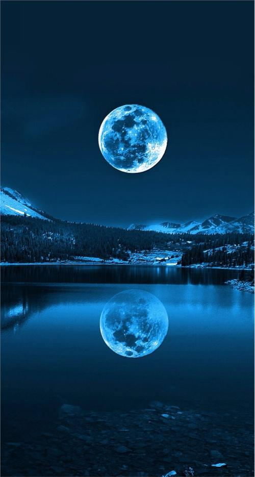

<!DOCTYPE html>
<html lang="en">

<head>
  <meta charset="UTF-8">
  <meta name="viewport" content="width=device-width, initial-scale=1.0">
  <meta http-equiv="X-UA-Compatible" content="ie=edge">
  <title>Document</title>
  <style>
    * {
      margin: 0;
      padding: 0;

    }

    html,
    body {
      width: 100%;
      height: 100%;
    }

    .container {
      width: 100%;
      height: 100%;
    }

    .music {
      width: 100%;
      height: 100%;
      position: relative;
    }

    .music img {
      width: 100%;
      height: 100%;
    }

    .avator {
      width: 200px;
      height: 200px;
      border-radius: 50%;
      position: absolute;
      left: 26%;
      top: 20%;
      animation: circleStyle 4s infinite linear;
      /* animation: name duration timing-function delay iteration-count direction fill-mode; */
    }

    @keyframes circleStyle {
      0% {
        transform: rotate(0);
      }

      100% {
        transform: rotate(360deg);
      }
    }

    .avator img {
      width: 200px;
      height: 200px;
      border-radius: 50%;
    }

    #video {
      /* display: none; */
    }

    .music-box {
      width: 100%;
      height: 200px;
      position: absolute;
      left: 0;
      bottom: 4%;
      display: flex;
      justify-content: center;
      align-items: center;
    }

    .music-box span {
      display: inline-block;
      width: 60px;
      height: 60px;
      border-radius: 50%;
      text-align: center;
      line-height: 60px;
      background: red;
      color: #fff;
    }

    .paused {
      animation-play-state: paused;
    }

    .music-process {
      width: 100%;
      height: 20px;
      position: absolute;
      bottom: 0;
      background: lightblue;
    }

    .music-process .bg {
      width: 0%;
      height: 100%;
      background: red;
    }

    .dot {
      width: 20px;
      height: 20px;
      background: rgb(230, 207, 173);
    }

    .active {}
  </style>
</head>

<body>


  <!-- <video src="https://cn2.zuidadianying.com/share/FPK8JDxlEaoD1wXW" controls></video> -->

  <!-- mp4 -->
  <!-- <video width="300" height="300" src="../RPReplay_Final1565678372.MP4" controls></video> -->

  <video src="" id="video" width="300" height="300" controls></video>

  <div class="wrap">
    <div class="container">

      <!-- <div class="music">
        
        <div class="avator paused">
          
        </div>
      </div> -->

      <div class="music-process">
        <div class="bg">
          <div class="dot"></div>
        </div>
      </div>

      <!-- <div class="music-box">
        <span class="prevBtn">
          <</span> <span class="playBtn">=
        </span>
        <span class="nextBtn">></span>
        <span class="mutedBtn">静音</span>
      </div> -->

    </div>
  </div>


  <script>

    var video = document.getElementById('video');
    // var prevBtn = document.querySelector('.prevBtn');
    // var playBtn = document.querySelector('.playBtn');
    // var nextBtn = document.querySelector('.nextBtn');
    // var mutedBtn = document.querySelector('.mutedBtn');
    var dot = document.querySelector('.dot');
    var musicProcess = document.querySelector('.music-process');
    var musicData = [
      {
        "id": 0,
        "src": "../shape of you.mp3",
        "avator": "./img/icon1.jpeg"
      },
      {
        "id": 1,
        "src": "../fail.mp3",
        "avator": "./img/icon2.jpeg"
      },
      {
        "id": 2,
        "src": "../shape of you.mp3",
        "avator": "./img/icon3.jpeg"
      },
      {
        "id": 3,
        "src": "../fail.mp3",
        "avator": "./img/icon4.jpeg"
      }
    ]
    video.src = musicData[0].src;
    // // oncanplay:
    // var flag = true;
    // // 播放  方法：
    // playBtn.onclick = function () {
    //   console.log('d')
    //   this.classList.toggle('active')
    //   if (flag) {
    //     video.play()
    //   } else {
    //     video.pause()
    //   }
    //   flag = !flag;
    // }
    // // 静音 属性
    // var mutedFlag = true;
    // mutedBtn.onclick = function () {
    //   if (mutedFlag) {
    //     video.muted = true;
    //   } else {
    //     video.muted = false;
    //   }
    //   mutedFlag = !mutedFlag;
    // }

    // // 
    // prevBtn.onclick = function () {
    // }
    // 下一首
    // var musicIndex = 0;
    // nextBtn.onclick = function () {
    //   musicIndex++;
    //   if (musicIndex > 3) {
    //     musicIndex = 0;
    //   }
    //   console.log(musicIndex, 'musicIndex')
    //   video.src = musicData[musicIndex].src;

    //   // 切歌之后要加一个函数
    //   video.load() // 加载函数
    // }

    // 拖拽

    // 总时长  当前播放时长
    video.oncanplay = function () {
      // 播放总时长
      var durationTime = parseInt(video.duration);
      // 思路：算出每一px 走几秒  当前进度条多长  当前播放总时长
      var speed = durationTime / musicProcess.offsetWidth;
      dot.ontouchmove = function (e) {
        var movex = e.touches[0].pageX;
        dot.style.transform = `translate(${movex}px)`;
        // 当前播放的时长 赋值
        video.currentTime = movex * speed;
      }
    }


  </script>


</body>

</html>